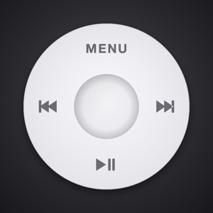
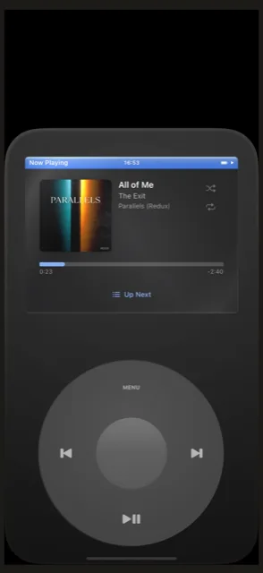
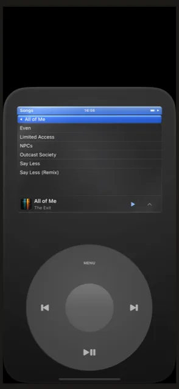
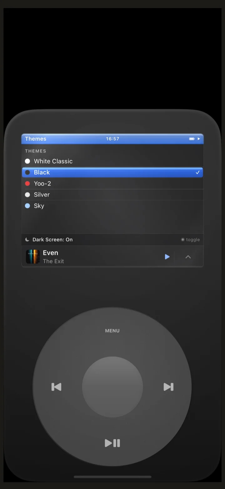
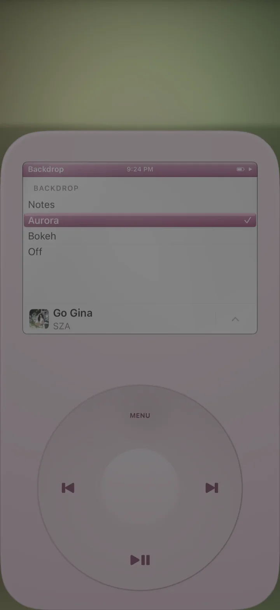

A music player you actually touch. Spin to scroll, press to play — tactile wheel with haptic clicks. Your library or Apple Music, no accounts required.
Download on the App Store


Spin to scroll, press to act. Every tick delivers a haptic click — deliberate, physical control over your music.
Import MP3, FLAC, and more. Your files live in the app's private storage — plays without a network connection.
Search and browse the full Apple Music catalog — by artist, album, or playlist — alongside your local files.
Choose floating notes, a slow Metal aurora, or bokeh — they react to what's playing, quiet when you pause.
White Classic, Silver, Sky, Rose, Sage — each a tribute to a generation of players.
Full VoiceOver and Dynamic Type support. WCAG AA contrast on every theme. No ads, no tracking, no accounts.
Floating notes, a slow Metal aurora, or bokeh drift behind the wheel — they react to what's playing, quiet when you pause and alive when something good comes on.
